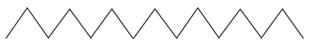

Unit One - Lesson 1
Draw, identify, or describe the rounded-corner arches; explore a teacher-provided raised-line version before answering.
Draw, identify, or describe the zigzag peaks; explore a teacher-provided raised-line version before answering.

Draw, identify, or describe the descending diagonal strokes; explore a teacher-provided raised-line version before answering.
Draw, identify, or describe the ascending diagonal strokes; explore a teacher-provided raised-line version before answering.
Draw, identify, or describe the open-right curves; explore a teacher-provided raised-line version before answering.
Draw, identify, or describe the open-left curves; explore a teacher-provided raised-line version before answering.